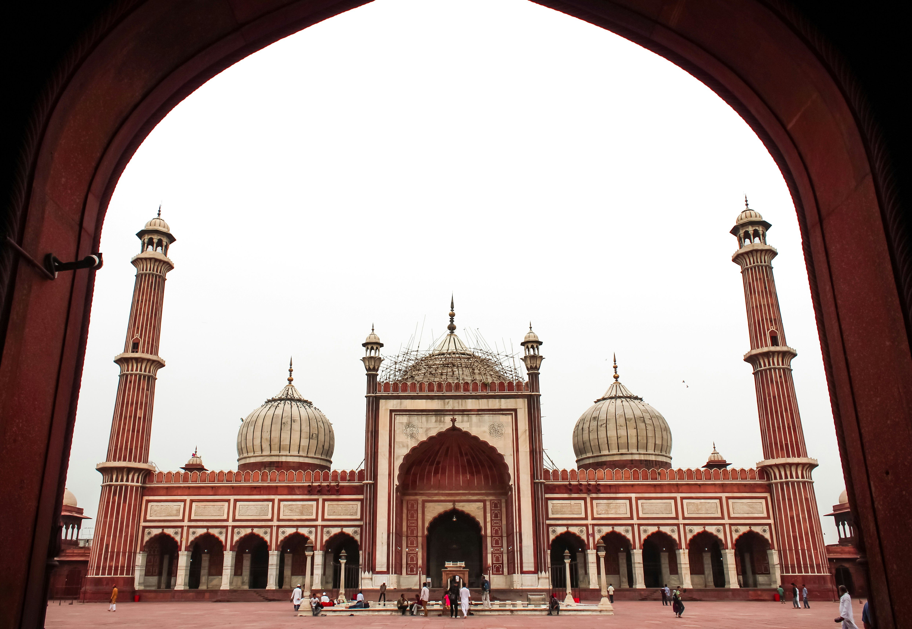
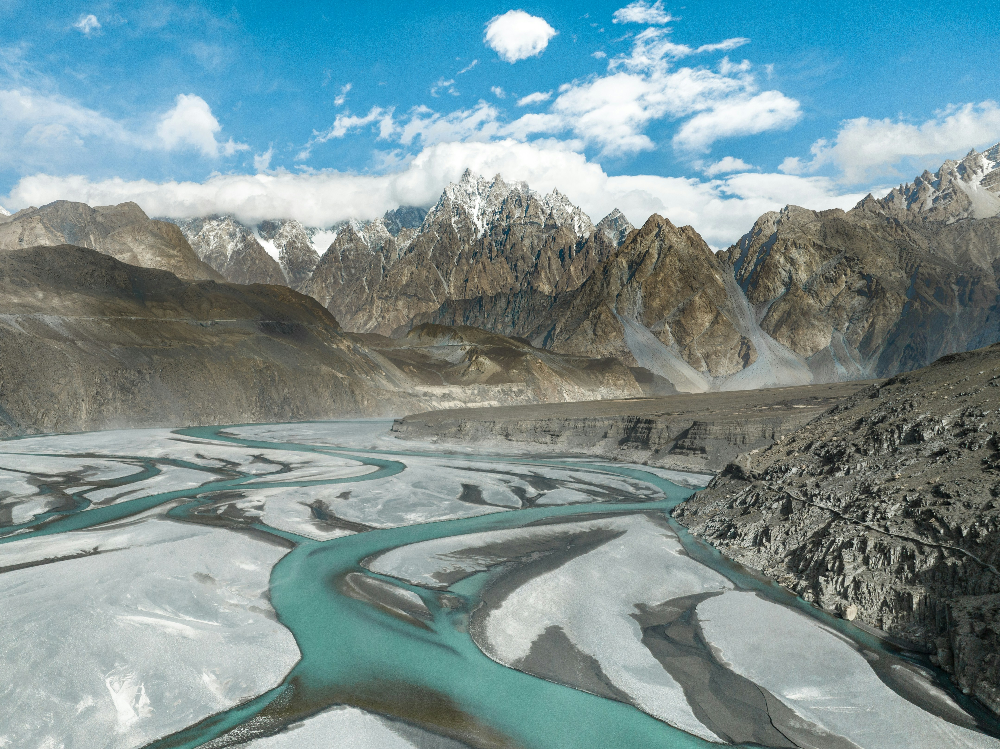
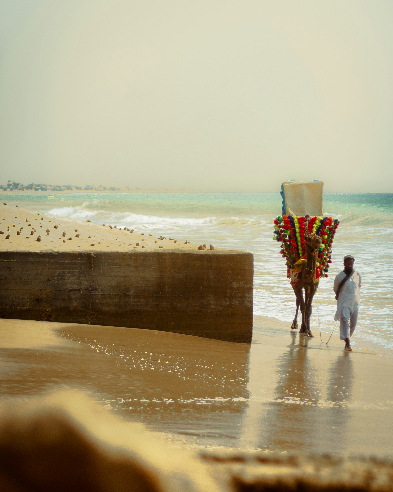

Pakistan is home to some of the most stunning natural and historical landmarks in the world. From ancient Mughal architecture to towering mountain peaks, the country offers a wide range of destinations for history lovers, nature enthusiasts, and adventure seekers alike. Wikipedia – Tourism in Pakistan

Lahore Fort – Wikipedia
Lahore Fort, also known as Shahi Qila, is a massive Mughal fortress located in the heart of Lahore. It was built and expanded over centuries by multiple Mughal emperors, including Akbar, Jahangir, and Shah Jahan. The fort covers over 20 hectares and contains 21 notable monuments including palaces, mosques, and gardens.
It is recognized as a UNESCO World Heritage Site and is one of the most visited historical landmarks in Pakistan. Inside the fort, the Sheesh Mahal (Palace of Mirrors) is particularly breathtaking — its walls and ceilings are entirely covered in small convex mirrors that reflect light beautifully. UNESCO – Lahore Fort

Badshahi Mosque – Wikipedia
Built in 1673 by the Mughal Emperor Aurangzeb, the Badshahi Mosque is one of the largest mosques in the world and one of the finest examples of Mughal architecture. Located directly across from Lahore Fort, it can accommodate over 100,000 worshippers in its courtyard alone.
The mosque is constructed from red sandstone and features three massive white marble domes and four towering minarets. Its grand entrance gateway, intricate stone carvings, and vast open courtyard make it one of the most photographed buildings in all of South Asia. Learn more about Badshahi Mosque

Hunza Valley – Wikipedia
Nestled in the Karakoram mountain range in Gilgit-Baltistan, Hunza Valley is one of the most breathtaking places on Earth. Surrounded by peaks exceeding 7,000 meters, the valley is known for its crystal-clear rivers, ancient forts, terraced apricot orchards, and warm, hospitable people.
The valley is a popular destination for trekkers and mountaineers, serving as a gateway to peaks like Rakaposhi and Ultar Sar. The ancient Baltit Fort, perched high above the valley, has stood for over 700 years and offers panoramic views of the surrounding mountains. About Hunza Valley

Karachi Coastline – Wikipedia
Karachi, Pakistan's largest city, sits along the Arabian Sea and offers a long stretch of coastline with several popular beaches. Clifton Beach and French Beach are among the most visited, drawing families, couples, and tourists throughout the year, especially at sunset.
The beaches are known for their golden sand, camel rides, fresh seafood stalls, and colorful boats. Hawke's Bay is another favorite spot, known for being a nesting site for endangered sea turtles. About Clifton Beach
This video showcases some of Pakistan's most stunning landscapes and landmarks. – Watch on YouTube